9. Алгоритм Краскала и система непересекающихся множеств
Прим, Краскал и структура непересекающихся множеств.
Материалы и примеры по пунктам
Алгоритмы Краскала
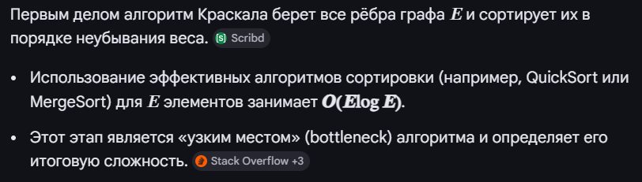

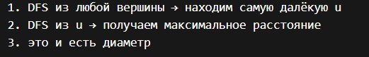
Алгоритм работает только на неориентированных графах
1 итерация
СНМ (Система непересекающихся множеств) — это эффективная структура данных, которая позволяет управлять коллекцией элементов, разбитых на несколько непересекающихся групп.
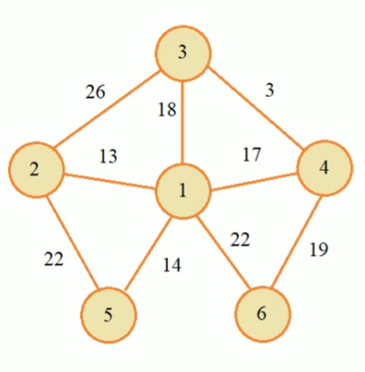
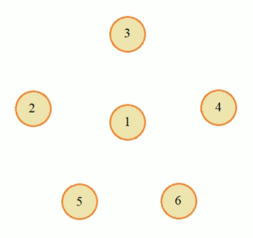
универсален для работы с несвязными графами. Его стоит выбирать, если в данных могут быть изолированные группы узлов : алгоритм за один проход построит минимальный остовный лес, объединив всё, что в принципе можно соединить. Вам не нужно следить за тем, из какой точки начинать или остались ли «брошенные» вершины.
После сортировки рёбер:
Логика работы
(A,B)1
(B,C)2
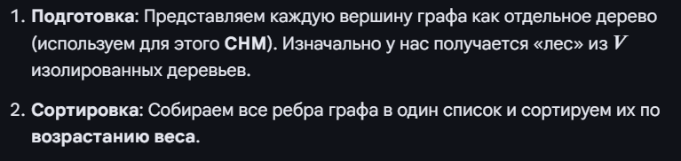
(A,C)3
(C,D)4
(B,D)5
инициализация СНМ
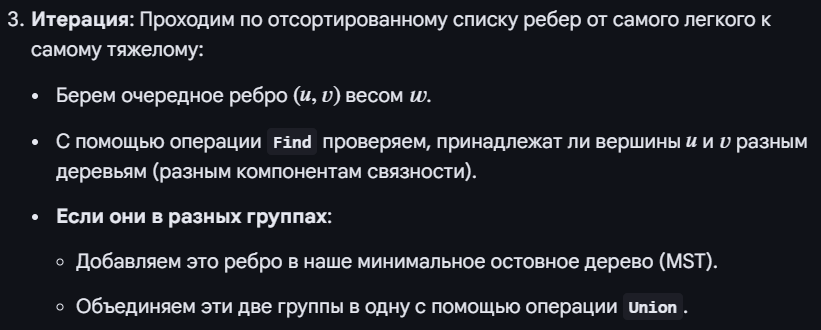
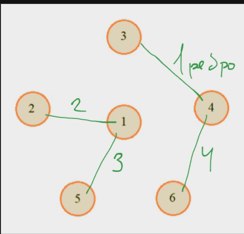
{A} {B} {C} {D}
2 ИТЕРАЦИЯ
добавляем ребро (A,B)
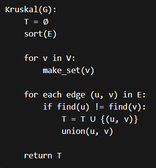
{A,B} {C} {D}
добавляем (B,C)
{A,B,C} {D}
проверяем (A,C)
Одинаковое множество → ребро создаёт цикл, пропускаем.
добавляем (C,D)
{A,B,C,D}
Итоговое MST
Схемы и рукописные примеры
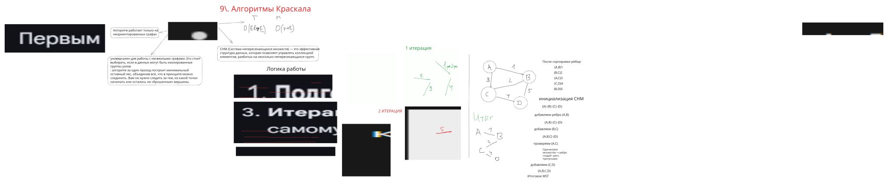
Страницы из PDF
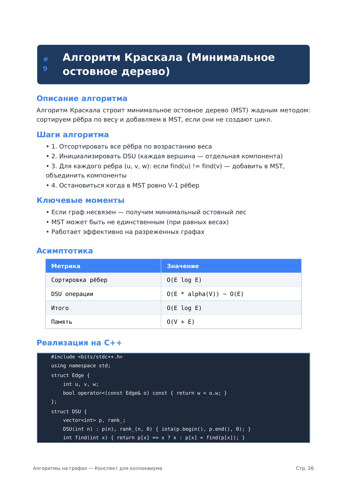
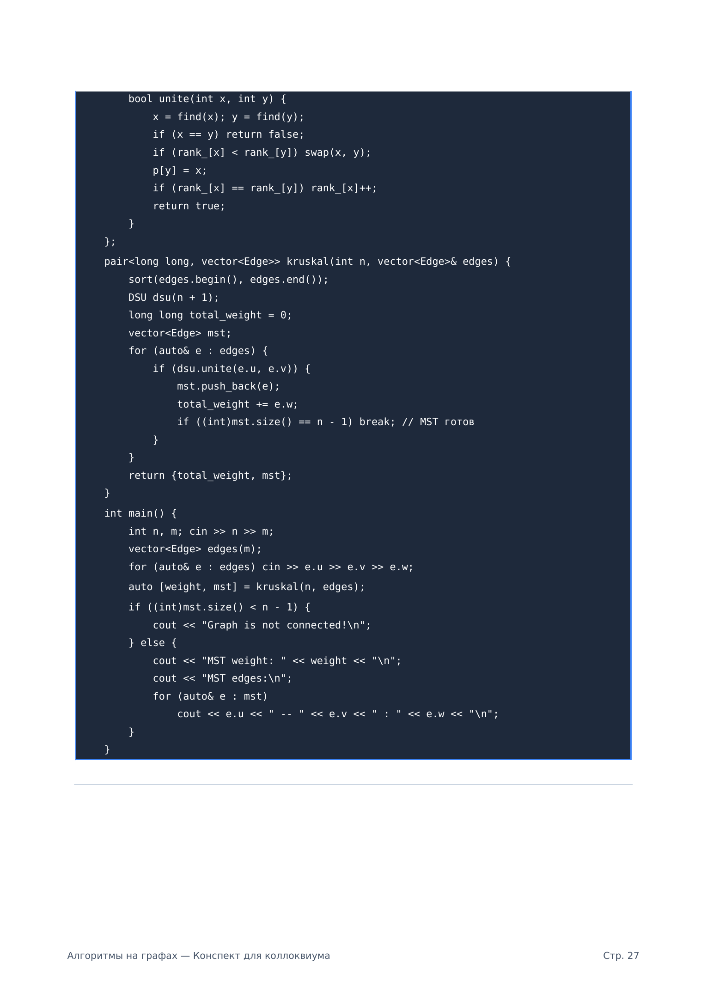